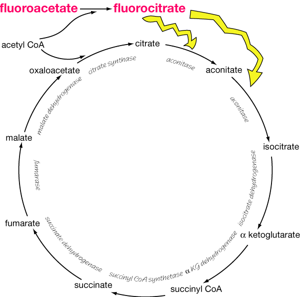

Fluoroacetates occur naturally in plants overseas (mainly S. Africa - particularly gibflaar) which are capable of poisoning livestock. However the main losses in domestic animals in NZ have been accidental poisoning of dogs and some grazing animals which have ingested baits of synthetic fluoroacetate (sodium monofluoroacetate, SMFA, 1080) used for vermin control. No fluoroacetate compound has been found in any plant in New Zealand.
Sodium monofluoroacetate was identified as a potent and effective rodenticide during 1943 - 1944. Fluoroacetamide (compound 1081) was developed shortly afterwards during studies to find fluorine derivatives which are less toxic than fluoroacetate. It has a slower onset of action, and poisoned animals show fewer neurological signs although in practice fluoroacetamide is just as toxic fluoroacetate. The differences in clinical signs between these two products are thought to be due to the slow hydrolysis of fluoroacetamide in vivo to fluoroacetic acid.
Some countries such as the UK restrict the use of 1080 to areas such as sewers and ship’s holds. In NZ, 1080 is the most commonly used poison against feral cats, rats, rabbits, possum and wild pigs, and is superseding the use of cyanide, arsenic and phosphorus impregnated baits. The use of 1080 in NZ is restricted to licensed operators, who are associated with Pest Control Boards and DOC. Even so, 1080 toxicity is common in dogs, sheep and cattle.
1080 is usually presented in jam or grain based baits or soaked into diced carrots. Rodents do not develop a bait shyness to 1080, but it was estimated that between 20 30% of possums were surviving a standard 1080 poisoning operation. 1080, rapidly induces anorexia, which interfers with the ingestion of sufficient quantities of the bait to get a lethal dose of the poison. To overcome this, bait loadings have been increased by 33%. Carrot or grain based baits are usually aerially sown onto large tracts of possum or rabbit infested country. Toxicity with carrot baits occurs because under hot, dry conditions, the baits dehydrate and no longer look like pieces of carrot, but with the first shower of rain, the carrot swells and becomes attractive to stock. As the 1080 solution diffuses right through the carrot, it requires a certain amount of rain to leach out the poison. When the sliced carrot is no more than 1cm thick, 90% of the dissolved poison is leached out by 25mm of rain. Thick carrot pieces (2.5 - 5cm) are still toxic after 150mm rain and it is these pieces which are most likely to be eaten by sheep. Fluoroacetates are slowly destroyed by soil bacteria, but do not usually persist in the environment for longer than 2 months. However, samples should be retrieved or tested for toxicity at the end of a 1080 poisoning operation before stock are grazed on the area. Serious cases of 1080 poisoning have occurred when cattle and sheep were allowed to graze farm blocks on which 1080 baits had been laid. Alternatively, a paste containing 0.06% and 0.08% sodium fluoroacetate is available for rabbits and possums, respectively.
Most preparations containing fluoroacetate incorporate nigrosine, a black dye, as a warning to people. A green dye (Lissamine), is occasionally used to avoid ingestion of grain by birds by exploiting the blind spot for green on the retina of most bird species. However, Canada geese were poisoned around Lake Benmore (prior to 1979), by treated green dyed oats, as this protective measure is of no value for foraging and grazing birds, like geese. 1080 is easily leached from poison treated oats, and 25mm or more rain would render the oats safe.
The unintentional poisoning of sheep and dogs has led to an even more guarded use of 1080. In fact some Pest Control Boards did replace its use with phosphorus and cholecalciferol baits. The following tables show the number of confirmed cases between 1960 - 1976 and 1979 - 1992 period.
No NZ species accumulate fluoroacetate, but it is a problem overseas. Fluoroacetate is the toxic principal of the South African plant Dichapetalum cymosum (gibflaar), a plant which is well known for causing rapid death in sheep. The young leaves of D. cymosum are very palatable to stock and may contain up to 450 ppm of fluoroacetate. The seeds of D. toxicarum (ratsbane) from Sierra Leone contain fluoro oleic acid, a related toxin. The toxic principle in a related plant species, D. michelsonii, is not known but this species is poisonous to sheep in East Africa. The tree Acacia georginae (gidgee) and the plant species of the closely allied genera Gastrolobium and Oxylobium from Autralia and also Palicourea plants in South America, also contain fluoroacetate. Gastrolobium and Oxylobium species are highly palatable plants which makes them particularly dangerous for grazing livestock.
Gidgee is found primarily in Queensland, and is responsible for many fatalities in cattle. The toxin is found in the seeds (up to 420ppm) and the pods. There appears to be a wide range of toxicity within individual plants, and cattle have been observed to eat some plants with no apparent ill effects. Factors which influence the toxicity of the ingested material include whether there is an alternative feed source, and the stress from which the animals may be suffering.
Australia has about 27 Gastrolobium species, 18 of which are potentially dangerous to livestock. All plant species, except for G. grandiflorum are found in the south west of Western Australia. G. bilobum (heart leaf), is potentially the most toxic as its leaves contain up to 2650ppm of the fluoro compound. G. grandiflorum which is found in northern Australia, produces 100% mortality in all stock, even though the leaves only contain approximately 185ppm of the toxic principle. The flowers, seeds and young leaves are the most toxic parts of the plants, with some plant species only requiring 30gms of plant matter to kill a sheep.
Oxylobium species are also confined to the south and southwest of Western Australia. O. parviflorum (box poison) is the most toxic species, with the leaves containing up to 2500ppm of the compound. Most species contain quantities of the fluoro compound ranging between 100 500ppm.
In areas with high concentrations of fluoride in the environment, fluoroacetate can accumulate in forage and grain crops. However, there is no evidence that poisoning occurs following consumption of these plants.
Sodium fluoroacetate is a water soluble white powder. It is hygroscopic when exposed to air and insoluble in organic solvents such as kerosene, alcohol, acetone or animal and vegetable fats and oils.
The chemical structure of 1080 is similar to sodium acetate, with a hydrogen atom replaced by a fluorine. Fluoroacetamide (1081), is the acid amide of monofluoroacetic acid.
FCO structure is the toxic group in both compounds, and it is very stable due to the strength of the carbon fluorine bond. The percentage of the toxophore in 1081 is 79%, which is much higher than in 1080 (61%), even though 1080 is 2 - 5 times more toxic than 1081 for the rabbit, sheep and dog.
1080 is extremely toxic to all mammals, although the higher mammals are less susceptible than rodents. The reason for the wide variation in toxicity is not known: it does not seem to be due to differences in the size of the animal, the type of digestive tract or the basal metabolic rate. It may be related to the rate of elimination, or the rate of fluoroacetate condensation with oxaloacetate. Table 40 Toxicity of 1080 for various species
The toxicity of 1080 in ruminants is influenced by the route of administration and if eaten, the nature of the fodder. Experimental results suggested that a high dietary protein may exert a protective effect in these species.
Secondary poisonings of cats and dogs may occur from the ingestion of dead or dying animals. Rodents require a relatively high dose of fluoroacetate to be killed (see Table 40), thus enough 1080 might remain in the digestive tract to poison a scavenger. Dogs are the most frequently poisoned species due to high species susceptibility and their scavenging nature. Even if the baits are placed deep into burrows, the animals come out to die and these carcasses are still toxic to dogs. The danger of toxicity is greatest if the dog consumes the whole carcass of the poisoned pest, especially the stomach contents. Intentional poisoning is also conceivable.
Because tissue residues are minimal, the ingestion of muscle from a poisoned carcass is unlikely to cause toxicity in carnivores. People would have to ingest large quantities of the meat, heart or liver, from poisoned carcasses to be affected. Chronic poisoning, resulting from long term ingestion of contaminated meat would be rare, because 1080 does not accumulate within the body. 1080 does not yield toxic fumes which makes it a relatively safe chemical to handle provided the user is well trained and careful. Even the prepared baits are relatively safe as an adult would have to consume 750 grams for a lethal dose, compared to 10 grams of a phosphorised jam.
Multiple small doses of 1080 can induce a degree of protection against large doses, and in rats, genetic resistance can develop.
Before deer farming became an important industry in New Zealand, the NZ Forest Service considered the use of 1080 in deer control. This raised the question as to whether there was any possibility of acute poisoning in humans who might eat the meat of deer which had ingested 1080 and had been shot before showing signs of poisoning.
The following table shows the amount of meat a hunter would have to eat in order to receive a fatal dose of 1080:
Table 41 Secondary Toxicity of 1080 to man
| Multiples of lethal dose taken by deer | Amount of meat to kill 68kg man |
| 1 | 72kg |
| 20 | 34kg |
| 50 | 16kg |
The first animal (1 lethal dose) might have lived for 30 hours after taking the bait but the other two probably died within 2 to 3 hours. Acute poisoning in man would not occur and chronic poisoning from daily ingestion of deer meat would be most unlikely as 1080 is not a cumulative poison, and is eliminated from the body within a few days without ill effects in the case of non fatal poisoning. However, 1080 residues can be a problem in deer shot for sale of venison.
1080 and 1081 are readily absorbed from the gastrointestinal and respiratory tracts, abraded skin and mucous membranes, but not through intact skin. They are not known to accumulate in any one tissue.
The classical theory for 1080 poisoning is the so called “lethal synthesis” effect on the Krebs (tricarboxylic acid) cycle (Figure 7). Fluoroacetate and fluoroacetamide combine with acetyl Co A to form fluoroacetyl Co A, which then combines with oxaloacetate to produce fluorocitrate. Fluorocitrate inhibits aconitase and the oxidation of citric acid, resulting in the blockage of the TCA cycle, energy depletion, citric and lactic acid accumulation and a decrease in blood pH. The inhibition of aconitase interferes with cellular respiration and the metabolism of carbohydrates, fats and proteins. Recent work shows that fluorocitrate is converted to 4 hydroxy trans aconitate which binds very tightly to, and inactivates aconitase. The end result is an accumulation of citrate which binds to serum calcium. The decrease in available ionized calcium has been shown to prolong the QT interval in electrocardiograms in cats.

Clinical signs may appear from thirty minutes to as long as two hours after ingestion depending on the dose and the animal species. The variable latent period is a result of the delay in conversion of fluoroacetate or fluoroacetamide to fluorocitrate and its accumulation to toxic levels. A massive dose reduces the latent period, but immediate results are still not produced.
Carnivores display central nervous excitation and gastrointestinal hyperactivity. Neurological signs in dogs include anxiety, frenzied behavior such as running and howling, and hyperesthesia. This wild activity may be interrupted by tonic and clonic convulsions, during which there is often a bradycardia. The animal may appear completely normal between convulsions but respiratory centre hypoxia during the convulsions lead to respiratory paralysis. Concurrent gastrointestinal signs include repeated defaecation with tenesmus, urination and vomition. Carnivores usually salivate after ingesting 1080. Hyperthermia has been reported in dogs. Dogs in the agitated state are not responsive to external stimuli. The animal becomes weaker as the cellular energy supplies decrease. Eventually the animal becomes comatose and death occurs from 2-12 hours after the appearance of clinical signs.
Cats and pigs tend to show a combination of cardiac and central nervous responses. In addition the pig demonstrates a persistent intermittent vomiting. Both animals often develop a marked hypergylcaemia. The poisoned cat may become depressed or excited, vocalize and be hyperaesthetic to light and touch. Hypothermia (37°C), cardiac arrhythmia and episodes of bradycardia between convulsions also have been reported in cats.
Herbivores and monkeys manifest predominantly cardiac signs. Cattle may die of heart failure following ingestion of massive amounts of the tree Acacia georginae. Animals ingesting lethal quantities of fluoroacetate stagger, tremble, sweat, and show signs of gastrointestinal irritation. Horses may also show a degree of hyperaesthesia to external stimuli. There are marked cardiac arrhythmias, combined with ventricular alteration, myocardial depression, and finally, ventricular fibrillation. Stress or exercise often precipitates death. Terminal convulsions may be seen secondary to cerebral anoxia.
Animals which die of 1080 intoxication experience a rapid onset of rigor mortis, with the limbs fixed in extensor rigidity. Animals exposed to sublethal doses show severe depression, anorexia, listlessness, teeth grinding and weakness. The surviving animals often remain unthrifty.
A post mortem examination is often of most value in ruling out other causes of death. Rigor mortis is rapid in onset. The necropsy findings are generally non specific and differ according to the primary cause of death. If death is a result of sudden ventricular fibrillation there may be no lesions at all, but if death occurs secondly to hypoxia, there is a general cyanosis of the mucous membranes, darkly coloured blood, congestion of the visceral organs, agonal haemorrhages on the myocardium, and pulmonary changes. Other findings may include an empty stomach, enteritis and a flaccid, pale heart in diastole. Many sheep and cattle show a focal scarring of the myocardium if there has been previous exposure to sublethal concentrations of Acacia georginae. The direct irritant effects of the organofluorine compounds on the alimentary tract is seen as a severe enteritis.
Histopathology of the brain often reveals oedema and lymphocytic infiltration of perivascular tissue.
A diagnosis of 1080 poisoning is based on clinical signs, access to the poison and the analysis of the compound in bait or vomitus. Residues of 1080 are most likely to be found in vomitus or stomach contents, a minimum of 50 grams of vomitus being required for analysis. Animals that ingest a minimum lethal dose of 1080 are unlikely to have detectable levels in body tissues. In experimentally poisoned animals, tissue fluoroacetate levels were considerably below 100 ppb.
Animals exposed to lethal quantities of 1080 have elevated citrate levels in the heart and kidney 2.5 to 5 times those of control animals. However, as citrate is a normal part of cells, high concentrations are not a direct proof of exposure to fluoroacetate.
The current diagnostic test involves the analysis of rumen or stomach contents, vomitus, muscle and liver tissue, or the suspected bait material for organofluorine compounds. Any levels detected indicate exposure as these substances are not found in normal cells. Analysis for these compounds is extremely complicated and time consuming, and the results are limited by the sensitivity with which fluoride ion can be detected in the final step. The analytical method used can detect a level as low as 0.05 mg 1080 in a 100 g sample (0.5 ppm).
If an animal dies after ingesting a relatively small amount of 1080, the body tissues may not contain a sufficient quantity of 1080 for it to be detected. 1080 is most likely to be detected in animals which die first after access to the poison. Samples should be submitted from those carcasses, in preference to those dying later, even thought the latter might be fresher.
For animals which yield a negative result, the diagnosis of 1080 must be based on the following points:
The analysis of plants for fluorine compounds is difficult and may yield false negative results. These plants store fluorine as organic combinations of fluoroacetate and other fluorinated aliphatic acids, which have the general formula F(CH2)nCOOH. Many of these compounds are only toxic if on β oxidation in vivo, the final product is fluoroacetate. Analysis of this plant material for fluoroacetate may fail to extract these potentially toxic longer chain fluoroacids, which will give an inaccurate indication of the potential toxicity of the plant.
Clinical pathology findings of hyperglycemia and metabolic acidosis are associated with 1080 poisoning. A twofold increase in serum glucose has been reported. In dogs citrate levels are elevated at least two or more times in serum and heart; but high levels are not conclusive. Hypocalcemia may also be present. Research in cats has shown that ionised calcium rather than total serum calcium is altered. Electrocardiograms of cats poisoned with 1080 show a prolongation of the QT interval corresponding to a decline in ionised calcium levels.
Differential diagnoses associated with convulsions or central nervous systems disorders include strychnine, chlorinated hydrocarbons, lead, hypomagnesemia, hypocalcemia, garbage intoxication, brain injury, cardioglycosides, taxine (Japanese yew) and methylxanthines. Strychnine poisoned dogs and cats are extremely sensitive to noise and other external stimuli uncharacteristic of fluoroacetate poisoning. The strychnine poisoned animal is not likely to have frenzied running behavior or vomit, urinate and defecate when poisoned. Chlorinated hydrocarbons may produce hyperthermia and convulsions, but the evacuation of the gastrointestinal tract and urination are not typical clinical signs. Lead poisoning (plumbism) may cause similar central nervous system signs (convulsions, running fits, and tremors). Lead poisoning is associated with gastrointestinal pain and vomiting while 1080 intoxication results in the rapid evacuation of the gastrointestinal tract and bladder. The clinical signs of lead poisoning tend to be intermittent and usually follow a longer course. The other differentials listed above may cause varying degrees of CNS stimulation, tremors, gastrointestinal signs or sudden death; however, the frenzied, vocalized excitation seen with 1080 poisoning are unlikely to occur.
Because of the rapid onset of clinical signs (2 - 3 hours) it is often difficult to treat animals effectively. Symptomatic and supportive care is unrewarding once clinical signs have appeared. Treating animals with sodium bicarbonate or acetamide and decontamination improves survival.
The rationale of using sodium bicarbonate relates to the metabolic acidosis associated with 1080 poisoning and the effects of citrate accumulation on ionised serum calcium.
Other treatments have been suggested which could remove or bypass the biochemical lesion in the citric acid cycle. The current human therapy consists of giving acetamide by intravenous infusion. Early recommendations were for intramuscular injections of glycerol monoacetate, however, it is no longer available from chemical suppliers.
The recommended treatment procedure is to:
Alternatively if acetamide is available the following treatment was reported by McLaren to be effective in the treatment of dogs in combination with proper decontamination. Dissolve 15g of acetamide granules in 1 litre of a 5% glucose solution. (Warm in a microwave oven if necessary). Administer 10 mL/kg over 15 minutes and reduce to 8 mL/kg/hr until the litre is finished. A second litre is made and administered at 5 mL/kg/hr. Additional acetamide can be administered as needed. The heart rate may greatly increase with acetamide treatment.
This may be effective in the treatment of 1080 poisoning, early recognition and treatment being crucial. In the human literature and in experimental work in rats a higher dose of a 10% solution of acetamide in 5% dextrose (100g/L) has been reported, although the effects of acetamide are minor in people. The acetamide is given iv at 7 - 10 mL/kg (over a 30 minute period, then at 5 mL/kg every four hours for 24 - 48 hours). This dose is closer to the 1.25 g/kg used to pretreat rats poisoned with fluoroacetate but more than double the dose found to be 85% effective in the treatment of dogs.
The best treatment may be a combination of treatment with sodium bicarbonate, calcium and acetamide. Unfortunately no research work has been reported thus requiring the veterinarian to use their judgement in which treatment to choose.
Research is underway to investigate the potential benefits of 4 methylpyrazole (used in the treatment of ethylene glycol poisoning) and other antidotes.
Prevention is still the best form of treatment. Although 1080 treated baits gradually lose potency as the poison is leached away, this should not be relied on for all baits. Baits should be analysed before stock are allowed back onto bait treated pastures and responsible stock management is required around toxic plants. Promptly collect and dispose of all poisoned rodents and birds.
Where the risk of exposure to 1080 is high, the use of muzzles is the best means of preventing poisoning in dogs. A well fitted wire muzzle that prevents the dog from scavenging dead carcasses is money well spent.
The national policy on the payment of compensation to owners of dogs which die of 1080 poisoning is a matter of agreement between the owner, the individual pest boards and their insurers. In the final analysis, the Boards and their insurers lay down the criteria for acceptance of responsibility and the dog owners may not get compensation, even when the diagnosis is established beyond question.
The prognosis is poor to grave depending on the amount of 1080 or 1081 ingested and the severity of clinical signs at presentation. Early recognition of 1080 poisoning, decontamination and the suggested treatments will improve the success rate in 75-85% of dogs that are treated. Residual health problems in pets after treatment are not apparent.
Allcroft, R. and Jones, J.S.L. (1969). Fluoroacetamide Poisoning I. Vet Rec 84: 399-402
Allcroft, R., Peters, R.A. and Shorthouse, M. (1969). Fluoroacetamide Poisoning II. Toxicity in Dairy Cattle: Confirmation of diagnosis. Vet Rec 84:403-409.
Anonymous: Reregistration Eligibility Decision (RED) Sodium Fluoroacetate. Prevention, Pesticides and Toxic Substances. EPA 738 5 95 025. 1 8. United States Environmental Protection Agency 1995.
Arellano M, Malet Martino M, Martion F, et al: 1998. The anti cancer drug 5 fluorouracil is metabolized by the isolated perfused rat liver and in rats into highly toxic fluoroacetate. Br J Cancer 77(1): 79 86.
Bartik, M. and Piskac, A. (1981). Veterinary Toxicology. Elsevier Scientific Publishing Company, Amsterdam Oxford New York. 159 160.
Bosakowski T. and Levin, A.A. (1986). Serum Citrate as a peripheral indicator of fluoroacetate and fluorocitrate toxicity in rats and dogs. Toxicol Appl Pharmacol. 85(3): 428 36.
Churchill R. (1996). 1080 Sodium Fluoroacetate Toxicity in Dogs no. 3796. Control & Therapy Series, Postgraduate Committee in Veterinary Science of the University of Sydney. 188:846.
Clarke, M.L., Harvey, D.G. and Humphreys, D.J. (1981). Veterinary Toxicology. Publ. by Bailliere Tindall, London. 328.
Eason, C.T. (1995). International Science Workshop on the Environmental Toxicology of Sodium Monofluoroacetate (1080). Surveillance 22(1):24 25.
Egekeze, J.O. & Oehme, F.W. (1979). Sodium monofluoroacetate (SMFA, compound 1080): A literature review. Vet Hum Toxicol. 21:411 416.
Gammie J. (1980). Sodium Fluoroacetate Poisoning in a cat. Can Vet J. 21(2) 64.
Gorniak S.L., Palmermo Neto J., and Spinosa H.S. (1994). Effects of Acetamide on Experimentally Induced Palicourea marcgravii (St Hill) Poisoning in Rats. Vet Hum Toxicol. 36(2):101 102.
Hatch, R.C. (1982). Poisons causing nervous stimulation or depression. Veterinary Pharmacology and Therapeutics. Edited by Booth, N.T. 5th Edn. Iowa State University Press/Ames: 997 999.
Hugghins, E.J., Casper, H.H. and Ward, C.D. (1988). Tissue Fluoroacetate Residues in Prairie Dogs Dosed with Low level Sodium Monofluoroacetate. J Assoc Off Anal Chem. 71(3): 579 581.
McLaren J. (1999). Treatment of 1080 poisoning in dogs. Vetscript. XII (2) 3.
McIntosh, I.G. and Staples, E.L.J. (1959). The toxicity of Muscle, Liver and Heart of Deer Poisoned with Sodium Monofluoroacetate (1080). N Z J Sci 2:371 378.
Osweiler, G.D., Carson, T.L., Buck, W.B and Van Gelder, G.A. (1985). Clinical and Diagnostic Veterinary Toxicology. 3rd Edition. Kendall/Hunt Publishing Company. Dubuque. 340 344.
Rammell, C.G., Hoogenboom, J.J., Julian, A.F. and Livingstone, P.G. (1985): Treatment of 1080 poisonings in dogs with glycerol monoacetate. N Z Vet J. 33:149 150.
Roy, A., Taitelman, U. and Bursytein, S. (1980).Evaluation of the Role of Ionized Calcium in Sodium Fluoroacetate (1080) Poisoning. Toxicol Appl Pharmacol. 56:216 220.
Seawright, A.A. (1982). Animal Health in Australia. Vol. 2 Chemical and plant poisons. Australian Government Publishing Service, Canberra. 43 45.
Spoerke, G.G., Samolinske, S.C., Wruk, K.M., Rumack, B.H. (1986). Infrequently used antidotes: Indications and availability. Vet Hum Toxicol. 28:69 75.
Surveillance (1974) 1(4): 27 The safety of 1080 as a poison for feral animals.
Surveillance (1975) 2(5): 18 1080 poisoning of cattle and sheep.
Surveillance (1976) 3(4): 20 1080 poisoning of sheep.
Surveillance (1976) 3(4): 21 1080 analysis.
Surveillance (1976) 3(4): 26 1080 poisoning (Canada geese)
Surveillance (1978) 5(1): 4 Diagnosis of 1080 poisoning in dogs
Surveillance (1986) 13(3):11 30 Cattle Tuberculosis control (Some detail on the use of 1080, cyanide baits).
Surveillance (1989) 16(4): 3 1080 Poisoning in sheep
Surveillance (1990) 17(3):29 1080 Poisoning of sheep
Surveillance (1992) 19(4): 4 1080 Poisoning of deer
Surveillance (1993) 20(3):30 1080 Poisoning of dogs
Surveillance (1994) 21(1):27 Accidental 1080 poisoning of livestock and companion animals
Surveillance (1994) 21(4): 4 1080 Poisoning of sheep
Surveillance (1995) 22(1):24 25 International science workshop on Environmental Toxicology of Sodium Monofluoroacetate 1080.
Surveillance (1998) 25(1):12 1080 Poisoning of dogs
Surveillance (1998) 25(3):16 1080 Poisoning of dogs
Surveillance (1998) 25(4):14 1080 Poisoning of dogs and cats